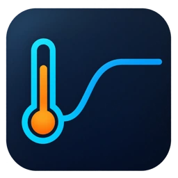

给温度一个目标
设置目标温度，调整 Kp、Ki、Kd。让 ESP32 上的 PID 程序决定每一次加热输出。

ControlLabESP32 · PID · 桌面仿真
设定 50℃，看 ESP32 调节加热功率。
从升温、趋稳到开门后的恢复，亲手完成一次温度控制实验。
Windows x64 · 单文件 · Native AOT
一次完整的控制实验
不需要准备实体开发板。
打开软件，就能观察一个温度闭环如何工作。
设置目标温度，调整 Kp、Ki、Kd。让 ESP32 上的 PID 程序决定每一次加热输出。
开门 5 秒，加快箱体散热。观察温度下降、加热增强，再逐渐回到目标值。
实时曲线对照实际与目标温度，电路、下位机代码和日志一起呈现整个控制过程。
少一点切换，多一点专注
控制与曲线放在一起。
深浅主题、代码高亮，让实验过程清晰可读。
控制、曲线、电路与日志，在同一个桌面工作区。
里面发生了什么
MicroPython 程序在 Wokwi 的 ESP32 中采样、计算 PID、输出 PWM。自定义热模型根据加热与散热更新温度，再通过 I²C 反馈给单片机。
Avalonia 负责设置参数和展示结果。温度不是上位机播放的预设动画，而是这个闭环持续计算的结果。
查看模型与算法说明温度达到 80℃或传感器异常时，停止加热。
现在，开始你的实验
下载后直接运行，等待仿真连接，点击「启动仿真」。
目标温度默认 50℃，点击「开始控温」即可观察升温。
Windows x64 · 约 17.24 MiB · 需要网络连接及 WebView2 Runtime
开始前，你可能想知道
不需要。ESP32 在 Wokwi 中执行真实的 MicroPython 控制程序，恒温箱和温度传感器由自定义热模型模拟。这里没有连接实体硬件，也不包含加热功率电路的 SPICE 分析。
当前版本需要网络加载 Wokwi 页面与仿真引擎。下位机固件和热模型已随软件打包，无须每次启动都在线编译。Windows 还需要安装 WebView2 Runtime，无须安装 .NET SDK。
单文件是分发方式。wrappe 首次运行会把程序和资源解包到用户数据目录，后续启动复用相同版本。浏览器数据也保存在用户数据目录，方便更新软件。
可以。项目以 MIT 许可开放源码，仓库包含 MicroPython PID 程序、热模型 C 代码和 Avalonia 上位机。软件内的代码区用于查看；修改后的下位机程序需要重新构建固件镜像。